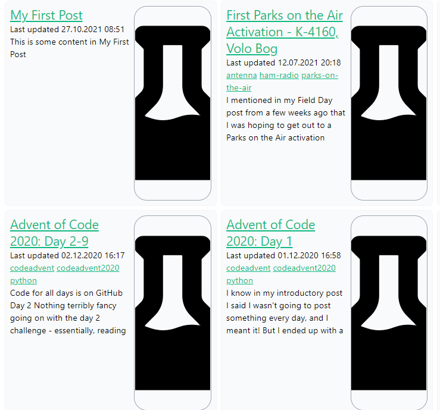

Porting Wordpress Blogs to Hugo
As the site gains more and more content, it seems like it's only a matter of time before I port my previous blog(s) over to the Hugo framework that I'm enjoying so much. This would include at least the current Wordpress blog hosted at Jeff.Glass, as well as potentially importing old posts from my ham radio blog, kk9jef.wordpress.com.
The Hugo documentation has some information on exporting from Wordpress to Hugo. The first listed option, wordpress-to-hugo-exporter, didn't work well - it returned an error code 500 timeout after about 5 minutes of trying to export. And the second option, exitwp-for-hugo wasn't working, since it relies on Python 2 and some of its dependencies (notably) html2text no longer support Python 2. So I'm pursuing an alternative, using the Wordpress-to-Jekyll exporter and converting to Hugo from there... but that too is 500-erroring. So... let's do this the hard way and parse the XML file?
Using python and the elementTree library, this isn't too bad? It think the most painful part will be porting the images over, since those will have to move from the Wordpress media library to Hugo's page bundles... but the actual parsing of the XML isn't too bad. Here's the script I hacked together, which finds all the post-objects in XML, pulls out their title and content and draft status and tags, and exports them with some basic frontmatter:
Let me be clear, this is a pretty hacky thing. But thankfully, this is just a timesaver to do some pre-processing that I should only have to do once. So if it's a bit of a hack and it works.... it works. It also separates the posts previously marked as "draft" into their own folder, while marking all posts as "draft: true" for the purposes of Hugo, so that I can vet each post before I mark it to go live, while preserving the old, draft, never-published posts. (Which at the time of writing includes these very words.) I also realized I could make my life easier my only exporting the actually live posts instead of all the content in a single XML file.I later modified this script to add some tags by default to paragraph, image, and list elements, then styled those tags using tailwind to create some basic formatting. I used BeautifulSoup4 to grab the appropriate tags and modify/add to their classes. The full script is below:
Once this was done, and some minor title-formatting was adjusted (removing extraneous punctuation and other things that might cause URL issues), I imported all of the post folders into my content/post folder. And voila, a blog is born.
Not a very pretty blog yet, mind, but I don't think there's a way around doing much of the correction by hand.
I did use some VS-code search-and-replace-with-regexes to adjust how captions were being handled. In particular, I used:
search: <figcaption>(.*)<\/figcaption><\/figure>
replace with: </figure><p class="post-img-caption">$1</p>
To move the image caption into a new paragraph outside of the figure, and then used CSS to center/style it.
Similarly, I used some regex to move the contents of another style of captions into their own paragraph.
search: \/>(.*?\[\/caption\])<\/p>
replace with: <\/p><p class="post-img-caption">$1</p>
I also learned some new useful keyboard shortcuts in VS Code. Namely, Cntl-K Cntl-F to auto-format a section of text, which helps break up spacing and tabbing on nested tables/divs.
Overall, the process of converting my 42 existing blog posts to Hugo formatting took roughly 2 hours of manual processing - adjusting tags, changing image format and list layout, using shortcodes for video links, and so on. This first pass does not include the process of moving all the images over from Wordpress to Hugo... which I did as a separate process. The script for is as follows:
Again, not necessarily a script anyone else would want to use vertbatim, just something I hacked together in half an hour that got the job done.At this point, it seemed silly to continue editing my drafts of these very posts in wordpress, so I endevoured to port them over to Hugo as well. This essentially involved repeating the process above, but with a selected set of the draft posts instead of the published blog posts.
In fact, as of these very words, I'm currently writing my blog posts directly into static files for generation via Hugo! So long, Wordpress! I'll just redirect the previous external link on my header.html partial to point to my list of blog posts, and voila. It's gone.